Heroes of the Storm
Responsive Mobile Prototype
Device Adaptation, Visual Design, Paper & Responsive Prototyping, FUN!
I'm a fan of all the things Blizzard Entertainment does, played and loved most of their older games like: Blackthorne, The Lost Vikings, Warcraft Orcs & Humans, Warcraft II: Tides of Darkness (including expansions) and Diablo; on their more recent games: Warcraft III: Reign of Chaos (inc. expansions), Starcraft (inc. Brood War), Starcraft II: Wings of Liberty & Heart of the Swarm, World of Warcraft (including Wrath of the Lich King, Burning Crusade, Cataclysm & Pandaria, 2005 - 2012), Diablo II. Very recently Hearthstone and finally Heroes of the Storm.
Heroes of the Storm really caught my attention; the chance of playing with a lot of the characters from fantasy worlds that I know and love with other people was just too exciting and proved incredibly fun; applied for the early Alpha and had the luck of being selected for testing the game really early!
I Played from Alpha until Launch, and had to stop since my iMac (early 2008) just can't handle the game requirements anymore. Pity... :-(
During the Alpha through Launch had the chance to study the game's evolution in balancing, user interface, information architecture, navigation, character development, map development and more; the large texts, big menu options, large buttons... that was just a huge invitation for me to try and port the game UI to a mobile device.... so I did something simple, this is my work log.
Work Log
Day 1
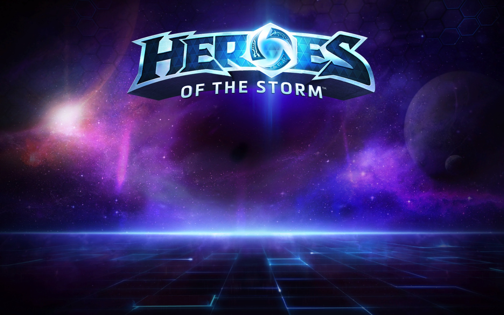
Played with a few Hero characters, had some difficulty using the right keys, thought of how to translate that difficulty to the tablet version.
Had the idea of playing with 3 heroes: one i'm very familiar with, one more or less and one completely unknown and observe my learning difficulties.
Checked Blizzard's terms on User generated content, perhaps my projects can be considered fan art? to be defined.
Had the idea of making different prototypes to study different design aspects, to be defined.
Had the idea of implementing a dragging interaction the game map with two fingers on a touchscreen, tap/hold to start/aim power cast with tap for stopping cast, while tap/hold all the UI controls become transparent.
Note to self: I feel that I can do the Interaction Design and aint afraid to code, but I prefer to code selectively. If things can be achieved without coding I won't do any code, the with this project is to make a prototype to get the message get across the team, not making amazing prototypes that will impress without needing them to do so.
Noticed that I should make my own assets for the visual prototype.
Day 2
Went throught the prototypes paper and decided to go with a dual implementation / visual approach and a visual only approach, then an integrated final version.
Defined the problem: "How might we approach gameplay and UI controls for Heroes of the Storm on a mobile device?".
Sketched a layout with some ""game event triggers"" buttons.
Defined a roadmap and described each stage milestones, purpose, goals, insights, etc. it looked like this: 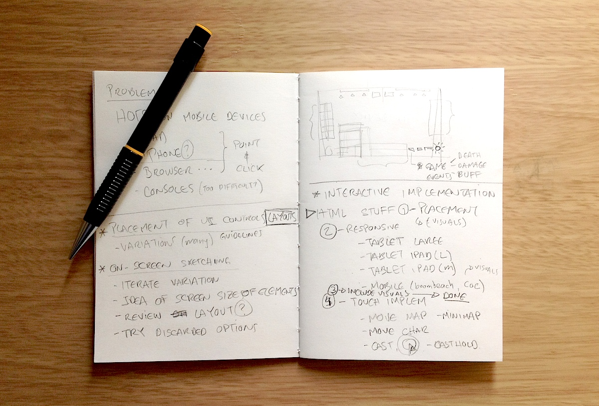
Searched for vainglory's UI screenshots and ended checking a bit of the forums for ""UI & Graphics"" Category.
Searched the Final Fantasy UI for layout ideas.
Decided to make some paper prototypes for studying layout options.
Played and took some screenshots, watched the game intro/tutorial video for unexpeted ideas.
Made a visual inventory of the Play UI elements.
Played again and took more screenshots :)
Drew the inventory of elements in sticky notes and cutted them so I could use them in configuring layouts in paper sheets. 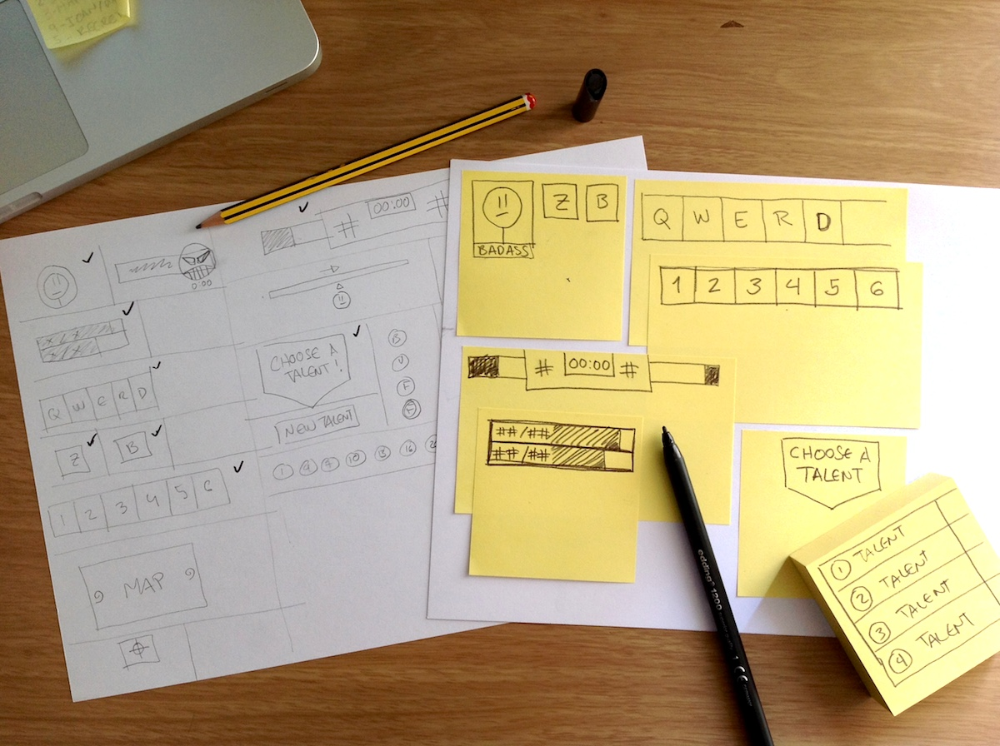
Had the idea of double tapping for attack-move.
Finished drawing the elements on sticky notes and cutted them to their contour. 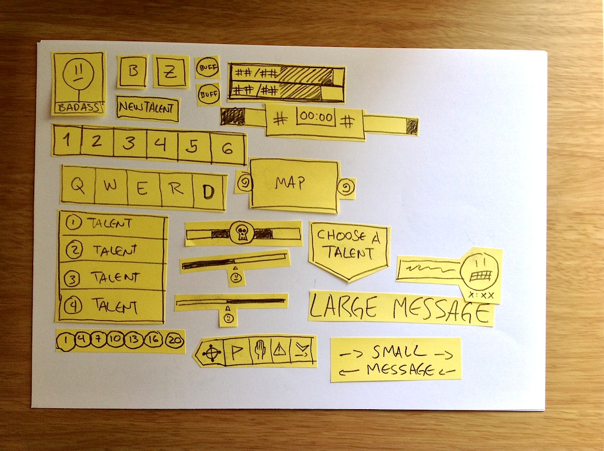
Did several variations of element placement and took pictures, with the goal of just trying to get new ideas for a better layout for mobile, I prefer thinking "slow and take my time to enjoy this and resist the urge and bad habit of jumping to digital right away.
In around 15 minutes I had checked 9 different layouts for the UI, these are the options:
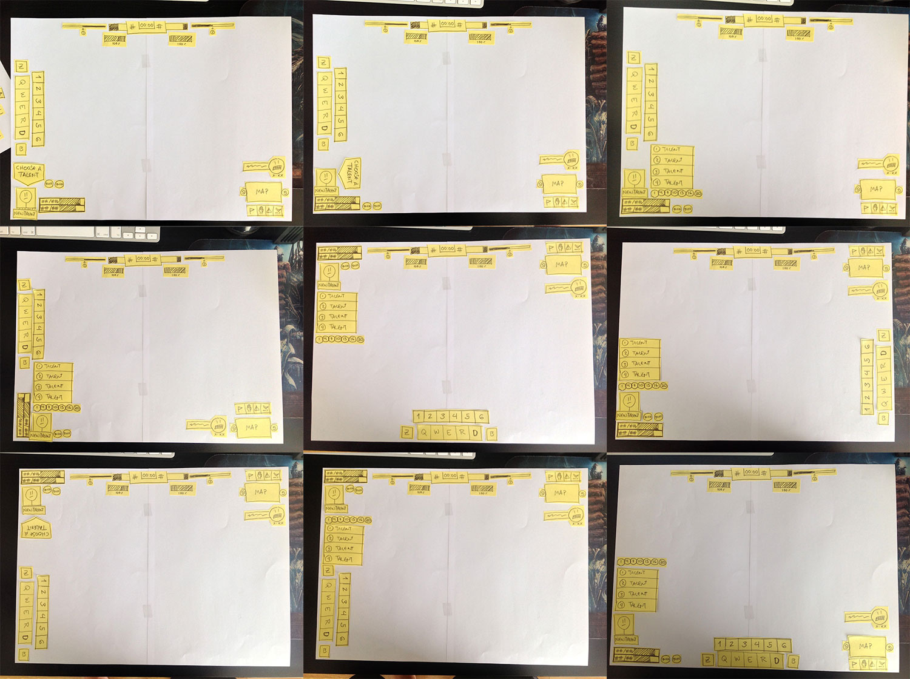
Tried their original layout idea, I liked it more than my own variations:
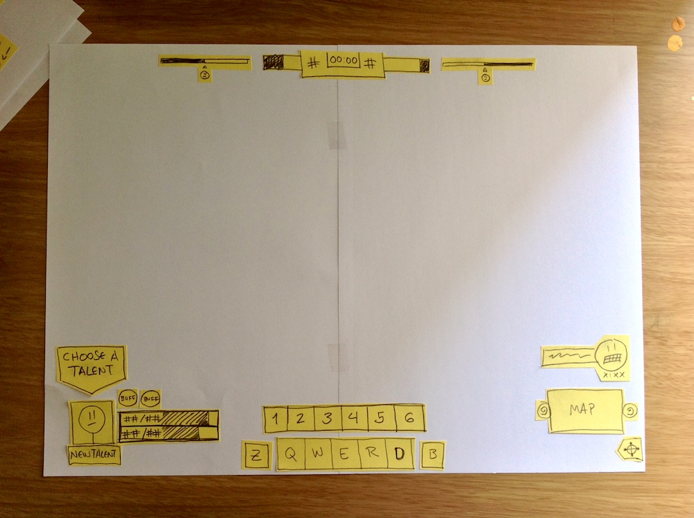
Decided to do this instead of only scribbling and sketching in paper o in my iPad, I could generate more options this way, also it was a great judgement-deferral exercise.
Started doing the layout of screen elements in Photoshop and mirrored it to the iPad with Skala Preview.
Day 3
Finished the layout of screen UI elements in Photoshop and checked that all all the sizes are good for touch controls, this was my wireframe:
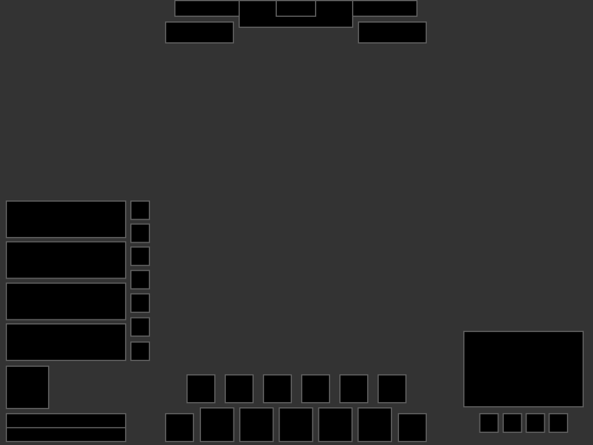
Compared the sizes that I chose with the sizes used in HOTS and realized that they are almost of the same size, that hints me of a possible launch of Heroes of the Storm on iOS devices:
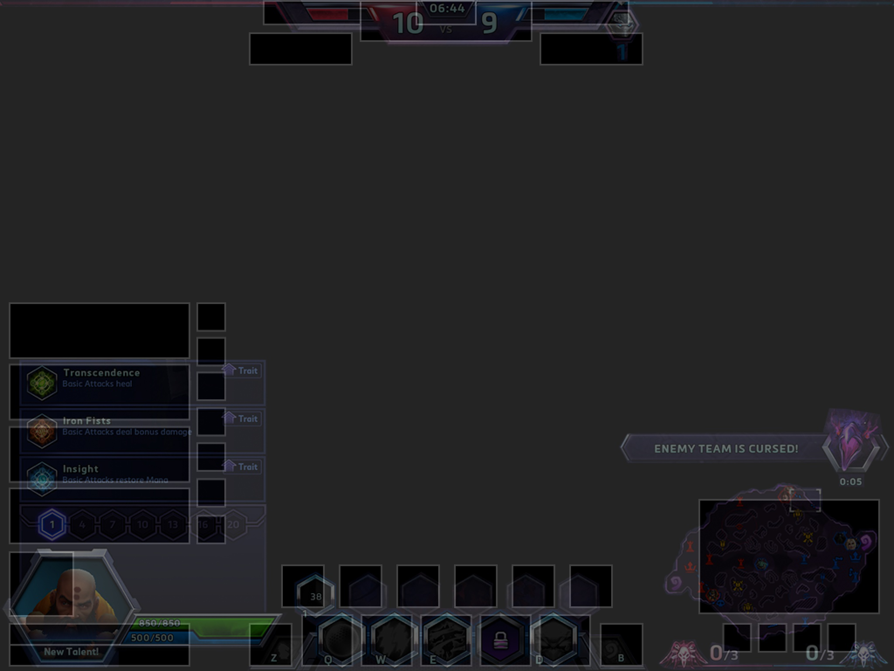
Adjusted the initial size of elements for iPad screens, based in that previous comparison
Selected the mobile breakpoints and started making the HTML layout
Did the first part of the layout-only in html
Advanced on the layout-only html, couln't do much since I ended up watching Apple's keynote and took note of the new iPad Pro screen Resolution of 2732 x 2046, that means 1366px X 1024px of device resolution and actually having some idea of how this might look on an iPad Pro.
Day 4
Finished the layout-only prototype.
Added a new breakpoint for resolutions larger than 2000px wide.
Added new steps to my workflow to manage the adjustments that should be done if there are more than 1 breakpoints.
Tested it in my iPads, TV, on the Desktop looks like this:
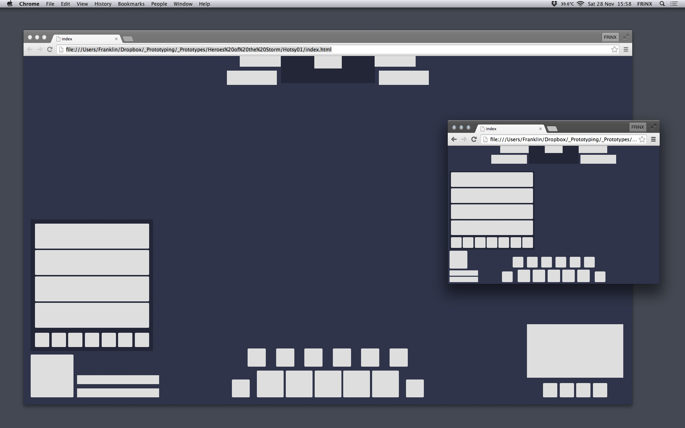
Compared the sizes at multiple resolutions with the original interface, quite close :)
Started to make the visual style items in photoshop, worked the Hexagon first, did this:
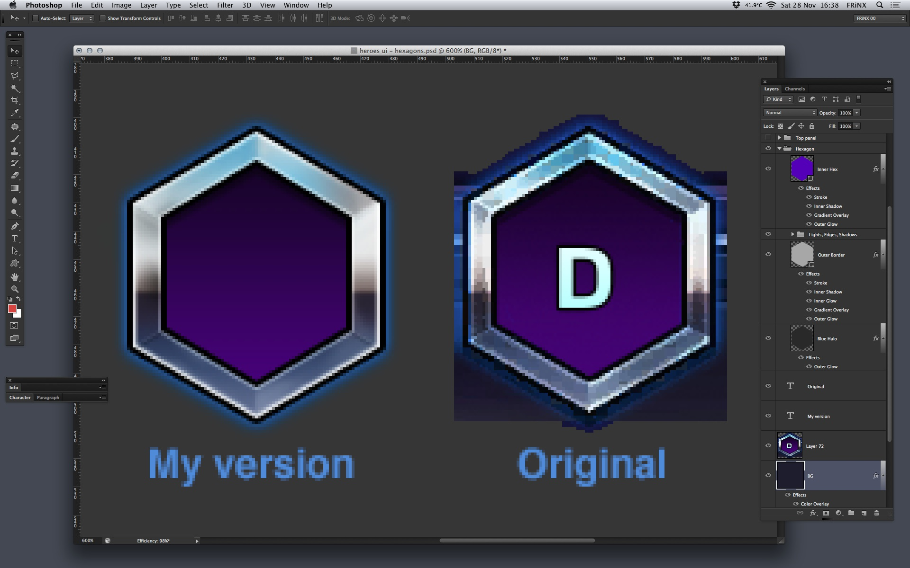Day 5
Made a vectorial version of the UI separated in layers in Photoshop, it wasn't working, so did the vectors in Flash, it looked like this before exporting back to Photoshop:
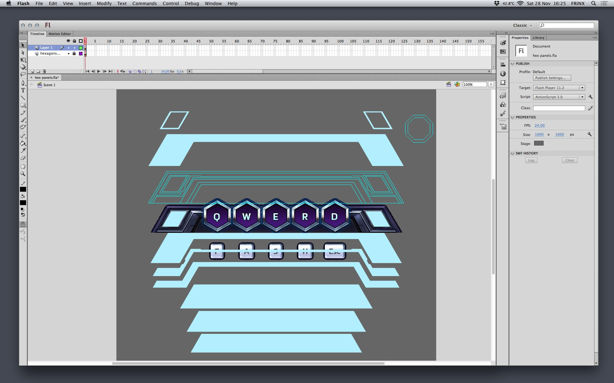
Advanced on recomposing the panel in layers and base colours.
Added borders, shadows, highlights by PS layer effects.
Added higlights and shadows by handpainting using my super trusty wacom tablet.
Finished the panel, the z & b buttons too.
This is the end result before exporting to the prototype:
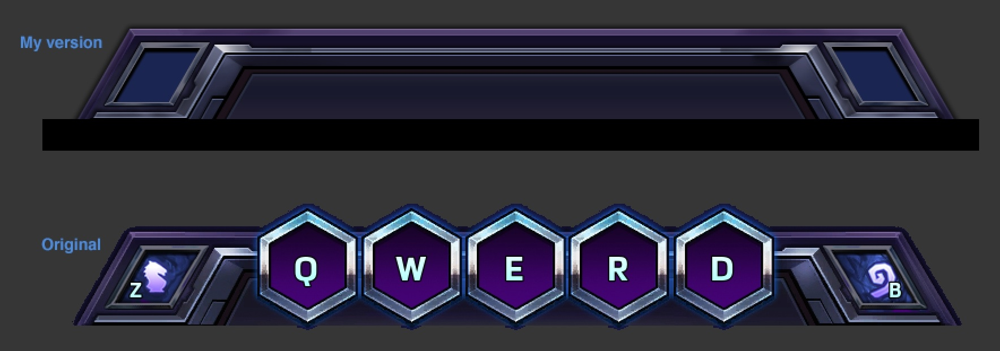Day 6
Made the top panel with timer and team colours, also made the level bars, looking like this:
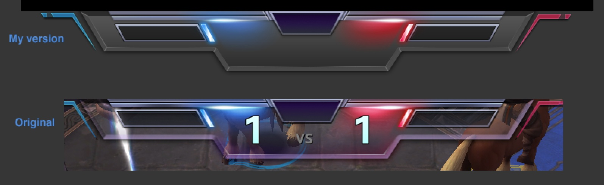Made the portrait and health/mana bars, the portrait frame was not a simple thing to do, looking like this:
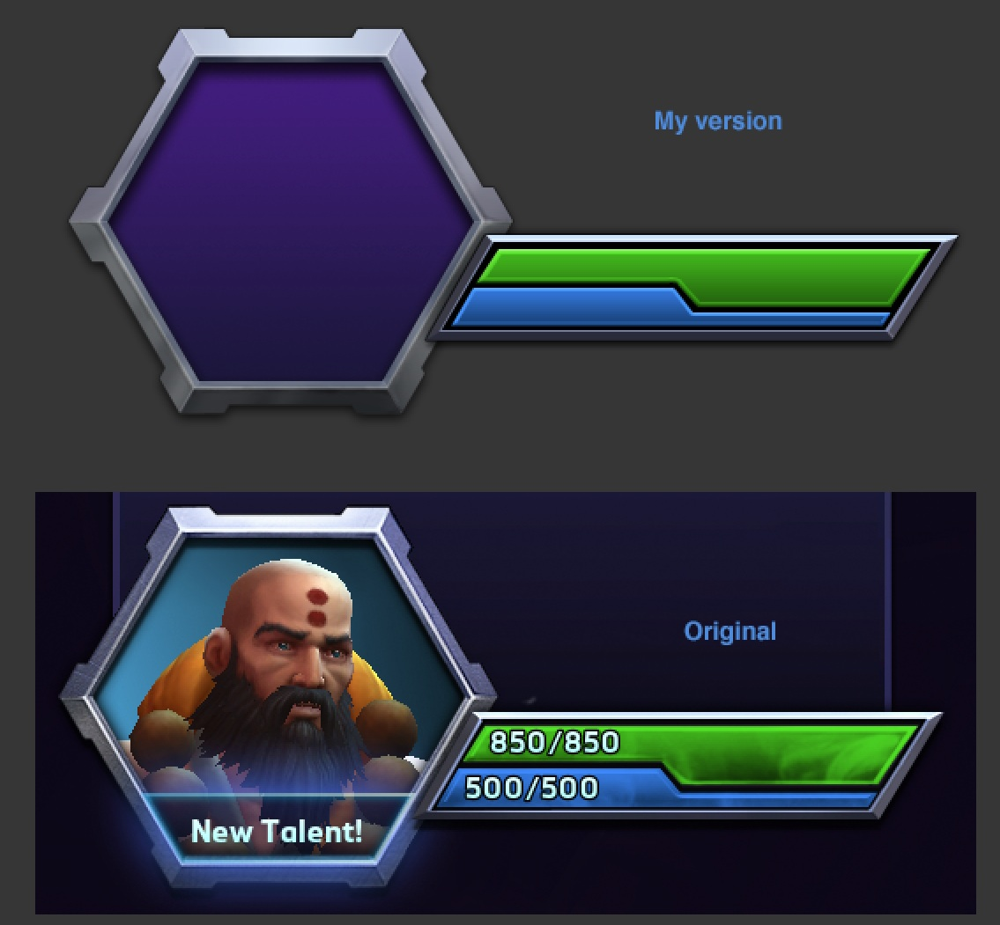
Made the top respawn bars.
Started to rebuild the prototype again since it was totally broken with the new art"
Day 7
Restarted the prototype with the new art.
Finished the top panel in the prototype.
Removed the 600px breakpoint, too much work!
Removed the Spawn bars, too complex and didn't added much.
Day 8
Restarted the prototype again, keeps coming apart when working in breakpoints. :(
Day 9
Remade the prototype again, left out the talents and numerical cast buttons, it is ready for touch integration!
Day 10
Researched for ways to handle touch in html5
Tried Hammer.js, discarded, too complex.
Tried plain html touch events, not conclusive, discarded.
Tried Touchpunch, decided to use this one!.
Implemented a test with Touchpunch: panning a div with a image bg with constrained area of movement.
Implement the map panning with Touchpunch and iterate later with HTML touch events.
Day 11
Implemented the map panning, initially tried to devise a mathematical way to center viewport, image and boundaries but noticed it was a complex idea for something too simple.
Decided to work the maths for triple centering as a posible blog post.
Used a battleground map tile images from Google Images.
Made a single image with the stolen battleground map separate jpg files, used it as a background for the prototype.
Added the different breakpoints indicator at the top left.
Tested it again in an iPhone, iPads and Smart TV Browser. Job's done! :-)